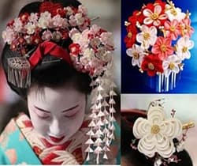

Інтернет-магазин
"КАНЗАШІ"
Що таке канзаші?
Канзаші – японська традиційна прикраса для волосся, що з'явилася під час владарювання клану в Токугаві в 1603 році. Гейші вигадали стиль нихонгами, укладаючи волосся в цікаві форми за допомогою власноруч роблених шпильок. Перед цим традиційно жінки в Японії ходили лише з розпущеним волоссям , але гейшам для навчання потрібні були спеціальні, красиві і зручні шпильки. Завдяки виробництву, всі шпильки зробили самостійно з природних матеріалів . Крім того, в Японії шпильки мали відповідати статусу та віку жінок. У стародавній Японії було заборонено прикрашати тіло, але дозволялося прикрашати волосся.
Як правильно носити?
Канзаші - це прикраса для волосся, яке є як на святах, так і у повсюдному житті в Японії . Вважалося , що вибір канзаші овинен відповідати вікам у жінки: молоді дівчини вдаються до більшої кількості квіткових композицій, тоді як жінки з ві ком віддають перевагу більшій кількості квіток. Канзаші можна використовувати на святах та в повсюдному житті. Важливо виконати деякі вимоги при виборі канзаші в Японії:
З чого мають виготовляти ?
В Європі канзаші виготовляють із різних матеріалів, не обмежуючись тканиною , як в Японії. Дівчата тут створюють канзаші із пластику, а також використовують справжнє дерево , оброблене японським лаком. Популярні також вироби із золота , срібла , шовку та навіть панциря черепахи. Особливо цінуються раритетні канзаші, створені в епоху Едо. Проте, у сучасних європейських країнах частіше витрачаються менше дорогих матеріалів , включаючи пластик . Декоративні квіти для канзаші часто виготовляють із різних тканин та шовкових стрічок.
Якими бувають канзаші?
Існує безліч варіантів виготовлення канзаші - від найпростіших до вражаючих творінь, таких як канзаші у формі бджілки.Багато фахівців творить вражаючі канзаші - брошки , букети, шкатулки, вироби, кольє та інші витвори. Хоча канзаші походять з Японії, в Україні також світові талановиті майстри, які відтворюють цю прикрасу. Нижче представлено кілька зображень цієї чудової краси.
Майстер клас для початківців
Канзаші своїми руками
Традиційно канзаші роблять із натурального шовку, використовуючи його шматочки, що стали популярними серед учнів гейш. При створенні канзаші квіток використовують невеликі шматочки шовку для формування окремих пелюсток. Техніка створення квітів із шматочків шовку дуже популярна, де канзаш і квітка складаються із з'єднаних пелюсток. Важливо зауважити, що виготовлення канзаші вимагає часу та терпіння. Існують дві техніки формування пелюсток: круглої і гострої форми. Після створення пелюсток їх об'єднують за допомогою клею або нитки. Для створення прикраси вам знадобляться тканина або стрічки атласні (2,5 см чи 5 см), лінійка, олівець або шматочок білого крейди, шматочок сухого мила, ножиці, запальничка чи свічка, пінцет, будь-який клей (наприклад, «Момент» або клей-пістолет), голка (довжина не менше 7 сантиметрів), міцні нитки, намистинки та інші декоративні елементи для прикраси.
Як зробити канзаші , як у японок.
Починайте з простих варіантів і поступово розвивайте своє мистецтво. Українські майстри теж вправно володіють технікою канзаші, яку винаходили в Японії. В цьому мистецтві існують два основних способи створення пелюсток. Почніть з вирізання тканини на невеликі квадрати і детальніше дізнайтеся, переглянувши відеоролік.